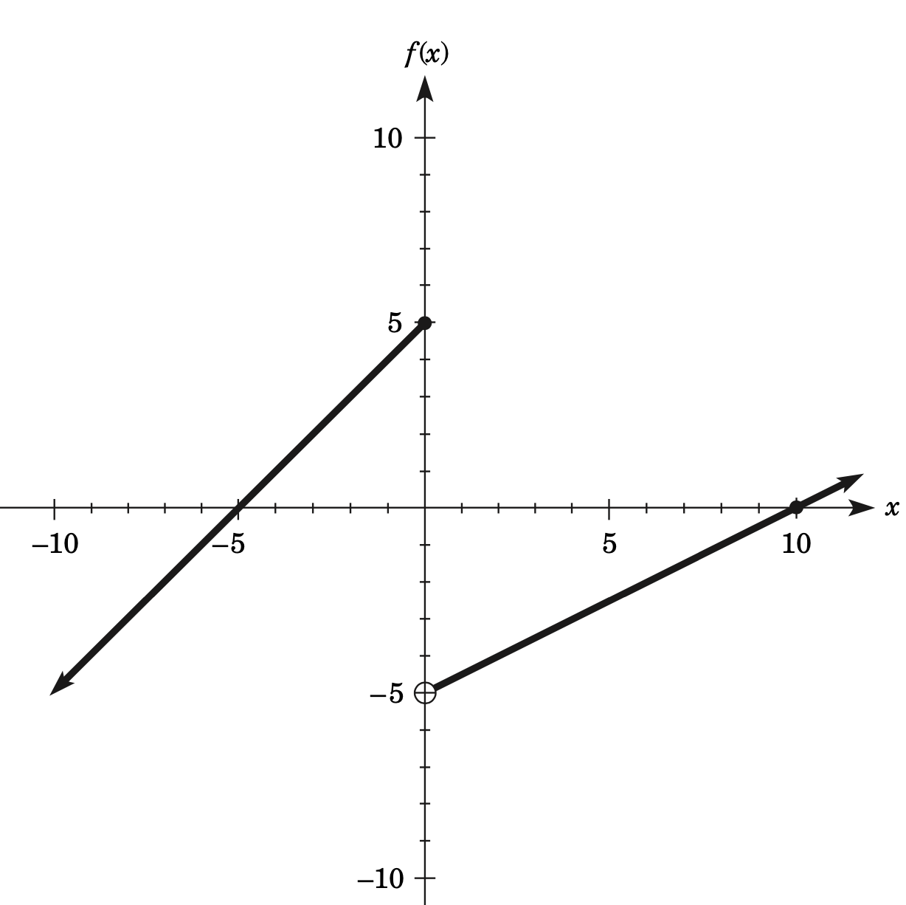
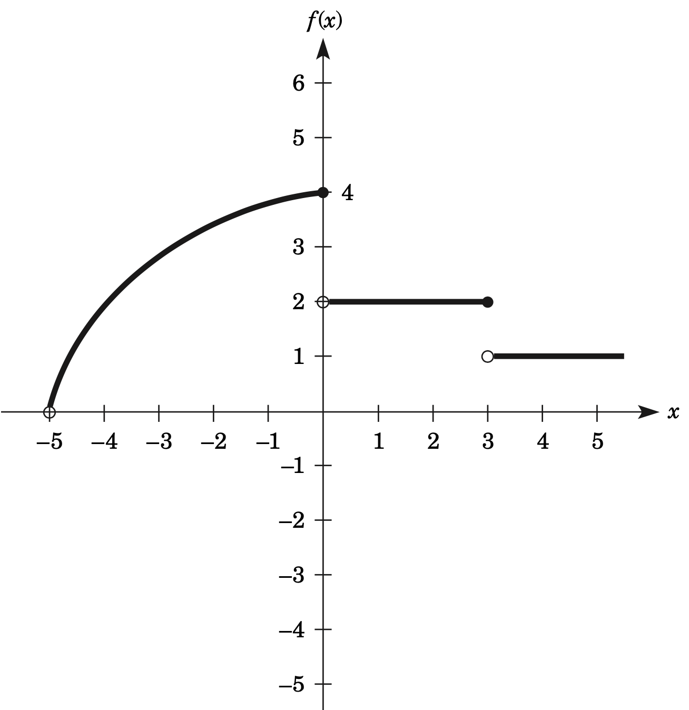

Prácticas Primer Examen Parcial
Ejercicio
Para cada una de los siguientes ejercicios. Determine si las siguientes funciones $f$ y $g$ son iguales
-
- $f(x)= \sqrt{x}$
- $g(x)=x$
-
- $f(x)= \left(\sqrt{x+1} \right)^{2}$
- $g(x) = x+1$
-
- $f(x)= \begin{cases} 1, & \text{ si } x\geq 0\\ -1, & \text{ si } x< 0 \end{cases}$
- $g(x) = \displaystyle{\frac{|x|}{x}}$
Ejercicio
Determine el dominio de cada una de las siguientes funciones
- $f(x)= \displaystyle{\frac{8}{x}}$
- $f(x) = \sqrt{x - 1}$
- $f(x)= \displaystyle{\frac{4}{4x^{2} + 4x}}$
- $f(x)= \displaystyle{\frac{9x - 9}{2x+7}}$
- $f(x) = \sqrt{4x + 3}$
- $f(x)= \displaystyle{\frac{2}{x^{2}+10}}$
- \( f(x) = -10 \)
- \( f(x) = 5x - 10 \)
- \( f(x) = -x + 3 \)
- \( f(x) = mx + b \)
- \( f(x) = -ax \)
- \( f(x) = 25 - x^2 \)
- \( f(x) = x^2 - 4 \)
- \( f(x) = \sqrt{x} + 4 \)
- \( f(x) = \sqrt{-2x + 25} \)
- \( f(t) = \sqrt{-t - 8} \)
- \( f(r) = \sqrt{r^2 + 9} \)
- \( f(x) = \displaystyle{\frac{10}{4 - x}} \)
- \( f(x) = \displaystyle{\frac{x - 4}{x^2 - 6x - 16}} \)
- \( f(u) = \displaystyle{\frac{3u - 5}{-u^2 + 2u + 5}} \)
Ejercicio
Para cada una de las siguientes funciones. Encuentre
- $f(x+h)$
- $\displaystyle{\frac{f(x+h) - f(x)}{h}}$
- $f(x) = 4x -5$
- $f(x) = x^{2} +2x$
- $f(x) = \displaystyle{\frac{x}{2}}$
- $f(x) = 3x^{2} - 2x -1$
- $f(x) = \displaystyle{\frac{1}{x}}$
- $f(x) = \displaystyle{\frac{x+8}{x}}$
Ejercicio
Determine si la función dada es una función polinomial.
- $ f(x) = \displaystyle{\frac{x^{3} + 7x -3}{3}}$
- $f(x) = 3^{-2} x^{2}$
- $(x+3)(x-1)^{2}$
- $f(x) = 2^{x}$
- $f(x) = \sqrt{1-x^{2}}$
- $f(x) = 3- (x-1)^{2}$
Ejercicio
Determine si la función dada es una función racional.
- $ f(x) = \displaystyle{\frac{x^{2} + x }{x^{3} +4}}$
- $ f(x) = \displaystyle{\frac{3 }{2x + 1}}$
- $f(x) = 4 x^{-4}$
- $f(x)= \begin{cases} 1, & \text{ si } x < 5\\ 4, & \text{ si } x \geq 5 \end{cases}$
- $f(x) = \displaystyle{\frac{-x^{2} + 0.005 x + 1}{x}}$
- $f(x) = \displaystyle{\frac{x}{\sqrt{x^{2} + 1}}}$
Ejercicio
Si $f(x) = x+3$ y $g(x) = x+5$. Encuentre las siguientes funciones:
- $(f + g)(x)$
- $(f + g)(0)$
- $(f - g)(x)$
- $(fg)(x)$
- $(fg)(-2)$
- $\displaystyle{\left(\frac{f}{g}\right)(x) }$
- $\displaystyle{\left(\frac{f}{g}\right)(0) }$
- $(f \circ g)(x)$
- $(f \circ g)(3)$
- $(g \circ f)(x)$
- $(g \circ f)(3)$
Ejercicio
Si $f(x) = 2x$ y $g(x) = 6 + x$. encuentre las siguientes funciones:
- $(f + g)(x)$
- $(f + g)(1)$
- $(f - g)(x)$
- $(f - g)(4)$
- $(fg)(x)$
- $\displaystyle{\left(\frac{f}{g}\right)(x) }$
- $\displaystyle{\left(\frac{f}{g}\right)(2) }$
- $(f \circ g)(x)$
- $(f \circ g)(0)$
- $(g \circ f)(x)$
- $(g \circ f)(2)$
Ejercicio
Para cada una de las siguientes funciones determine:
- \( f(x) = 5x - 10 \)
- \( f(x) = 3x + 5 \)
- \( f(x) = -x + 4 \)
- \( f(x) = -\displaystyle{\frac{x}{2}} \)
- \( f(x) = mx + b \)
- \( f(x) = mx \)
- \( f(x) = x^2 - 9 \)
- \( f(x) = -x^2 + 2x \)
- \( f(t) = t^2 + t - 5 \)
- \( f(r) = tr^2 - ur + v \)
- \( f(u) = u^3 - 10 \)
- \( f(u) = -2u^3 + 5u \)
- \( f(n) = n^4 \)
- \( f(t) = 100 \)
- \( f(x) = x^3 - 2x + 4 \)
- \( f(x) = 25 - \displaystyle{\frac{x^2}{2}} \)
Ejercicio
En los ejercicios siguientes, clasifique (si es posible) cada función por tipo (constante, lineal, cuadrática, polinomial, racional).
- \( f(x) = 2^x \)
- \( f(x) = -24 \)
- \( f(x) = \displaystyle{\frac{(x - 5)}{2}} \)
- \( f(x) = x^2 - 25 \)
- \( f(x) = 2x^0 \)
- \( f(x) = x^5 + 2x^3 - 100 \)
- \( f(x) = 10 - x/4 \)
- \( f(x) = 10/x \)
- \( f(x) = \log_{10} x \)
- \( f(x) = \displaystyle{\frac{x^4 - 5x^2}{x^6 + 5}} \)
- \( g(h) = -\displaystyle{\frac{25}{h^5}} \)
- \( h(s) = 3 - 4s + s^2 - s^{3/4} \)
- \( v(t) = x^2 \sqrt[3]{x} \)
- \( f(u) = (5u - 3)^4 \)
- \( f(n) = \displaystyle{\frac{50}{(4)^3}} \)
- \( g(h) = \sqrt{\displaystyle{\frac{100}{(5)^2}}} \)
- \( f(x) = 10^x \)
- \( f(x) = x^{16} \sqrt[3]{x} \)
- \( f(t) = \displaystyle{\frac{t^5}{36 - t^8}} \)
- \( f(x) = 3^{2x} \)
- \( f(x) = \log_{10} (x + 5) \)
- \( v(h) = \log_{e} h \)
- \( f(x) = [(x + 4)^5]^0 \)
- \( f(x) = [(x - 9)^0]^3 \)
Ejercicio
La función \( C(x) = 15x + 8,000 \) expresa el costo total \( C(x) \) (en dólares) de fabricar \( x \) unidades de un producto. Si el número máximo de unidades que se pueden producir es 50,000, determine el dominio restringido y el rango para esta función del costo.
Ejercicio
Función de la demanda. La función \( q = f(p) = 280\,000 - 35p \) es una función de la demanda que expresa la cantidad demandada de un producto \( q \) como una función del precio cobrado del producto \( p \), expresado en dólares. Determine el dominio restringido y el rango de esta función.
Ejercicio
Función de la demanda. La función \( q = f(p) = 180,000 - 30p \) es una función de la demanda que
expresa la cantidad demandada de un producto \( q \) como una función del precio cobrado del
producto \( p \), indicado en dólares. Determine el dominio restringido y el rango de esta función.
Ejercicio
Primas de seguros. Una compañía de seguros tiene un método simplificado para determinar la prima
anual para una póliza de seguro de vida. Se cobra una cuota anual sencilla de $\$150$ anuales para
todas las pólizas más $\$2$.50 por cada mil dólares de la cantidad de la póliza.
Por ejemplo, una póliza de $\$200,000$ costaría $\$150$ por la cuota fija más $\$50$, que corresponden
al valor nominal de la póliza. Si \( p \) es igual a la prima anual en dólares y \( x \) equivale al
valor de la póliza (expresado en miles de dólares), determine la función que se puede utilizar para
calcular las primas anuales.
Ejercicio
Una compañía eléctrica local usa el método siguiente para calcular las cuentas eléctricas mensuales
para un tipo de clientes. Se evalúa un cargo de servicio mensual de $\$$5 por cada cliente. Además,
la compañía cobra $\$0.095$ por kilowatt hora. Si \( c \) es igual a la cuota mensual expresada en
dólares y \( k \) es el número de kilowatts hora usados durante un mes:
- Determine la función que expresa el cargo mensual de un cliente como una función del número
de kilowatts hora.
- Use esta función para calcular la cuota mensual para un cliente que usa 850 kilowatts hora.
Ejercicio
Arrendamiento de automóviles. Una agencia de arrendamiento de automóviles renta autos con una tasa de $15 por día más $0.08 por milla conducida. Si \( y \) es igual al costo de la renta de un auto en dólares por un día y \( x \) equivale al número de millas conducidas en un día:
- a) Determine la función \( y = f(x) \) que expresa el costo diario de la renta de
un automóvil.
- b) ¿Cuál es \( f(300) \)? ¿Qué representa \( f(300) \)?
- c) Comente sobre el dominio restringido de la función.
Ejercicio
En la fabricación de un producto, una empresa incurre en dos tipos de costos. Se incurre en costos
anuales fijos de $\$250,000$ sin importar el número de unidades producidas. Además, para la empresa
cada unidad producida tiene un costo de $\$6$. Si \( C \) es igual al costo total anual en dólares
y \( x \) es igual al número de unidades producidas en un año:
- Determine la función \( C = f(x) \) que expresa el costo anual.
- ¿Cuál es \( f(200,000) \)? ¿Qué representa \( f(200,000) \)?
- Indique el dominio restringido y el rango restringido de la función si la capacidad
máxima de producción es de 300,000 unidades por año.
Ejercicio
Plan de incentivo salarial. Un productor de un producto perecedero ofrece un incentivo salarial a los conductores de sus camiones. Una entrega estándar toma un promedio de 20 horas. Se paga
Ejercicio
Utilidad. Cierto expendio de café vende una libra de café por $\$9.75$.
Los gastos mensuales son $\$4500$ más $\$4.25$ por cada libra vendida.
- Escriba una función \( r(x) \) para el ingreso mensual total como una función del
número de libras vendidas.
- Escriba una función \( e(x) \) para los gastos mensuales totales como una función
del número de libras de café vendidas.
- Escriba una función para la utilidad mensual total como una función del número de libras vendidas.
Ejercicio
Viaje en tren. Un boleto de viaje redondo en tren a la ciudad cuesta $\$4.50$. Escriba su costo
como función del ingreso del pasajero. ¿Qué tipo de función es?
Ejercicio
Función de costo. En la fabricación de un componente para una máquina, el costo inicial de un dado
es de $\$850$, y todos los otros costos adicionales son de $\$3$ por unidad producida.
- Exprese el costo total \( C \) (en dólares) como una función lineal del número \( q \) de unidades producidas.
- ¿Cuántas unidades se producen si el costo total es de $1600?
Ejercicio
Inversión. Se invierte un capital de \( P \) dólares a una tasa de interés simple anual \( r \)
durante \( t \) años, exprese la cantidad total acumulada del capital y del interés como una función de
\( t \). ¿Su resultado es una función lineal de \( t \)?
Ejercicio
Ventas. Para estimular las ventas a grupos grandes, un teatro cobra dos precios. Si su grupo es
menor de 12, cada boleto cuesta $\$9.50$. Si su grupo es de 12 o más, cada boleto cuesta $\$8.75$.
Escriba una función definida por partes para representar el costo de comprar \( n \) boletos.
Ejercicio
Utilice la gráfica de la función para determinar los límites indicados:
- \(\displaystyle{\lim_{{x \to -5^-}}} f(x)\)
- \(\displaystyle{\lim_{{x \to -5^+}}} f(x)\)
- \(\displaystyle{\lim_{{x \to -5}}} f(x)\)
- \(\displaystyle{\lim_{{x \to 0^-}}} f(x)\)
- \(\displaystyle{\lim_{{x \to 0^+}}} f(x)\)
- \(\displaystyle{\lim_{{x \to 0}}} f(x)\)

Ejercicio
Utilice la gráfica de la función para determinar los límites indicados:
- \(\displaystyle{\lim_{{x \to 0^-}}} f(x)\)
- \(\displaystyle{\lim_{{x \to 0^+}}} f(x)\)
- \(\displaystyle{\lim_{{x \to 0}}} f(x)\)
- \(\displaystyle{\lim_{{x \to 3^-}}} f(x)\)
- \(\displaystyle{\lim_{{x \to 3^+}}} f(x)\)
- \(\displaystyle{\lim_{{x \to 3}}} f(x)\)
- \(\displaystyle{\lim_{{x \to -5}}} f(x)\)
- \(\displaystyle{\lim_{{x \to 1}}} f(x)\)
- \(\displaystyle{\lim_{{x \to 4}}} f(x)\)

Ejercicio
Encuentre el límite solicitado en en cada uno de los siguientes ejercicios.
- $\displaystyle{\lim_{{x \to 2}}} 16$
- $\displaystyle{\lim_{{t \to 5}}} (t^2 - 5)$
- $\displaystyle{\lim_{{x \to 2}}} (3x^3 - 4x^2 + 2x - 3)$
- $\displaystyle{\lim_{{t \to 3}}} \frac{{t - 2}}{{t + 5}}$
- $\displaystyle{\lim_{{x \to 3}}} 2x$
- $\displaystyle{\lim_{{t \to \frac{1}{3}}}} (5t - 7)$
- $\displaystyle{\lim_{{r \to 9}}} \frac{{4r - 3}}{{11}}$
- $\displaystyle{\lim_{{x \to -6}}} \frac{{x^2 + 6}}{{x - 6}}$
- $\displaystyle{\lim_{{h \to 0}}} \frac{h}{{h^2 - 7h + 1}}$
- $\displaystyle{\lim_{{z \to 0}}} \frac{{z^2 - 5z - 4}}{{z^2 + 1}}$
- $\displaystyle{\lim_{{y \to 15}}} \sqrt{y + 3}$
- $\displaystyle{\lim_{{p \to 4}}} \sqrt{p^2 + p + 5}$
- $\displaystyle{\lim_{{x \to 2}}} \frac{{x^2 + 2x}}{{x + 2}}$
- $\displaystyle{\lim_{{x \to 2}}} \frac{{x^2 - x - 2}}{{x - 2}}$
- $\displaystyle{\lim_{{x \to 3}}} \frac{{x^2 - x - 6}}{{x - 3}}$
- $\displaystyle{\lim_{{x \to 3}}} \frac{{x - 3}}{{x^2 - 9}}$
- $\displaystyle{\lim_{{x \to 4}}} \frac{{x^2 - 9x + 20}}{{x^2 - 3x - 4}}$
- $\displaystyle{\lim_{{t \to 0}}} \frac{{t^3 + 3t^2}}{{t^3 - 4t^2}}$
- $\displaystyle{\lim_{{t \to 2}}} \frac{{t^2 - 4}}{{t - 2}}$
- $\displaystyle{\lim_{{x \to 0}}} \frac{{x^2 - 2x}}{{x}}$
- $\displaystyle{\lim_{{x \to 0}}} \sqrt{13^2 - 12^2} + (6 - 4)^2 \times 8 - \sqrt{(10 - 8)^2}$
- $\displaystyle{\lim_{{x \to 2}}} \frac{{3x^2 - x - 10}}{{x^2 + 5x - 14}}$
- $\displaystyle{\lim_{{x \to -4}}} \frac{{x^2 + 2x - 8}}{{x^2 + 5x + 4}}$
- $\displaystyle{\lim_{{x \to 0}}} \frac{{(x + 2)^2 - 4}}{{x}}$
- \(\displaystyle \lim_{{x \to -3}} (-2x^3)\)
- \(\displaystyle \lim_{{x \to 4}} (4x^2 - 5x + 1)\)
- \(\displaystyle \lim_{{x \to 2}} (-x^3)\)
- \(\displaystyle \lim_{{x \to -2}} (2x^3 - 16)\)
- \(\displaystyle \lim_{{x \to 8}} \frac{x^2 - 64}{x - 8}\)
- \(\displaystyle \lim_{{x \to 3}} \frac{9 - x^2}{3 - x}\)
- \(\displaystyle \lim_{{x \to -1}} \frac{3x^2 - 9x - 12}{3x + 3}\)
- \(\displaystyle \lim_{{x \to -\frac{1}{2}}} \frac{1 - x - 2x^2}{1 - 2x}\)
- \(\displaystyle \lim_{{x \to 0}} \frac{4}{x}\)
- \(\displaystyle \lim_{{x \to 3}} \frac{4}{x - 3}\)
- \(\displaystyle \lim_{{x \to 0}} \frac{8}{x + 3}\)
- \(\displaystyle \lim_{{x \to 2}} \frac{5}{4 - 2x}\)
- \(\displaystyle \lim_{{x \to 3}} \frac{x - 7}{x + 2}\)
- \(\displaystyle \lim_{{x \to 7}} \frac{x^2 - 49}{x + 7}\)
- \(\displaystyle \lim_{{x \to 3}} \frac{x^2 + 3x - 18}{x - 3}\)
- \(\displaystyle \lim_{{x \to -5}} \frac{x^2 + 3x - 10}{x + 5}\)
- \(\displaystyle \lim_{{x \to 3}} \frac{2x^2 + 7x - 15}{x - 3}\)
- \(\displaystyle \lim_{{x \to 3}} \frac{x^2 + 3x}{x + 3}\)
- \(\displaystyle \lim_{{x \to 0}} (3x^2 - 5x + 3)\)
- \(\displaystyle \lim_{{x \to 2}} (2x^3 - 10x)\)
- \(\displaystyle \lim_{{x \to 2}} \left(\frac{x^3}{3} - 7x^2\right)\)
- \(\displaystyle \lim_{{x \to 3}} \frac{2x - 8}{x + 4}\)
- \(\displaystyle \lim_{{x \to 2}} \frac{2x^2 + 3}{x^3 + 4x - 2}\)
- \(\displaystyle \lim_{{x \to -4}} 250\)
- \(\displaystyle \lim_{{x \to 0}} 175\)
- \(\displaystyle \lim_{{x \to -10}} \frac{x^2 + 25}{x}\)
- \(\displaystyle \lim_{{x \to -1}} (3x^3 + 2x^2 + x)\)
- \(\displaystyle \lim_{{x \to -2}} (-x^4 + 8x^2)\)
- \(\displaystyle \lim_{{x \to -2}} (-x^3 + 5x^2 + 10)\)
- \(\displaystyle \lim_{{x \to 2}} (5x^3 + 10x^2)\)
- \(\displaystyle \lim_{{x \to 5}} \frac{4x - 20}{3x^2 - 7x + 5}\)
- \(\displaystyle \lim_{{x \to -2}} \frac{10 + x^2}{5 - 8x + 2x^2}\)
- \(\displaystyle \lim_{{x \to -3}} (6x^3 + 2x)(5x - 10)\)
- \(\displaystyle \lim_{{x \to 5}} \left[\frac{x + 3}{x + 6} (x^2 - 12)\right]\)
- \(\displaystyle \lim_{{x \to -4}} \frac{x^2 + 8x - 14}{2x + 7}\)
- \(\displaystyle \lim_{{x \to 1}} \frac{x^2 + 3x - 24}{x - 3}\)
- \(\displaystyle \lim_{{x \to -4}} \frac{x^2 - 16}{x + 4}\)
- \(\displaystyle \lim_{{x \to -9}} \frac{81 - x^2}{9 + x}\)
- \(\displaystyle \lim_{{x \to -5}} (4x^3 - 5x^2 + 10)\)
- \(\displaystyle \lim_{{x \to c}} (x^2 - 2x + 3)\)
Ejercicio
Encuentre \(\displaystyle{\lim_{{h \to 0}}} \frac{{(x + h)^2 - x^2}}{h}\). Trate a \(x\) como una constante.
Ejercicio
Encuentre \(\displaystyle{\lim_{{h \to 0}}} \frac{{3(x + h) + 7(x + h) - 3x^2 - 7x}}{h}\). Trate a \(x\) como una constante.
Ejercicio
Para cada uno de los siguientes ejercicios encuentre \(\displaystyle{\lim_{{h \to 0}}} \frac{{f(x + h) - f(x)}}{h}\).
- \(f(x) = 7 - 3x\)
- \(f(x) = 2x + 3\)
- \(f(x) = x^2 - 3\)
- \(f(x) = x^2 + x + 1\)
- \(f(x) = x^3 - 4x^2\)
- \(f(x) = 3 - x + 4x^2\)
Ejercicio
En los siguientes ejercicios utiliza la definición de continuidad para mostrar que la función dada
es continua en el punto indicado.
- \(\displaystyle f(x) = x^3 - 5x, x = 2\)
- \(\displaystyle f(x) = \frac{x-3}{5x}, x = -3\)
- \(\displaystyle g(x) = \sqrt[3]{x+4}, x = 2\)
- \(\displaystyle h(x) = \frac{x-4}{x+4}, x = 4\)
- \(\displaystyle f(x) = \sqrt[3]{x-1}, x = 1\)
- \(\displaystyle f(x) = \frac{1}{x}, x = 0\)
- \(\displaystyle f(x) = \frac{x+4}{x-2}, 0\)
- \(\displaystyle f(x) = \frac{x^2 - 4x + 4}{x-2}, -2\)
Ejercicio
En los siguientes ejercicios utiliza la definición de continuidad para mostrar que la función dada
es continua en los puntos indicados.
- \(\displaystyle h(x) = \frac{x+4}{x - 2}, -2, 0\)
- \(\displaystyle h(x) = \frac{x-3}{x^2 - 9}, 3, -3\)
- \(\displaystyle h(x) = \frac{x^{2} - 4 x +4 }{6}, -2, 2\)
- \(\displaystyle h(x) = \frac{3}{x^{2} + 4}, -2, 2\)
- $f(x)= \begin{cases} x+2, & \text{ si } x\geq 2\\ x^{2}, & \text{ si } x< 2 \end{cases}, \,2,0$
- $f(x)= \begin{cases} \displaystyle{\frac{1}{x}}, & \text{ si } x\neq 0\\ 0, & \text{ si } x=0 \end{cases}, \,0,-1$
Ejercicio
Encuentre todos los puntos de discontinuidad en los problemas.
- \(\displaystyle f(x) = 3x^2 - 3\)
- \(\displaystyle h(x) = x - 2\)
- \(\displaystyle f(x) = \frac{x^2 + 3x - 4}{x^2 - 4}\)
- \(\displaystyle g(x) = \frac{(2x^2 - 3)^3}{15}\)
- \(\displaystyle f(x) = \frac{x^2 + 6x + 9}{x^2 + 2x - 15}\)
- \(\displaystyle g(x) = \frac{x - 3}{x^2 + x}\)
- \(\displaystyle h(x) = \frac{x - 7}{x^3 - x}\)
- \(\displaystyle f(x) = \frac{2x - 3}{3 - 2x}\)
- \(\displaystyle p(x) = \frac{x}{x^2 + 1}\)
- \(\displaystyle f(x) = \frac{x^4}{x^4 - 1}\)
- \(\displaystyle f(x) = \frac{2 + 3x - x^2}{x-1}\)
- \(\displaystyle f(x) = \left\{ \begin{array}{ll} 1 & \text{si } x \geq 0 \\ -1 & \text{si } x < 0 \end{array} \right.\)
- \(\displaystyle f(x) = \left\{ \begin{array}{ll} 2x + 1 & \text{si } x \geq -1 \\ 1 & \text{si } x < -1 \end{array} \right.\)
- \(\displaystyle f(x) = \left\{ \begin{array}{ll} 0 & \text{si } x \leq 1 \\ x - 1 & \text{si } x > 1 \end{array} \right.\)
- \(\displaystyle f(x) = \left\{ \begin{array}{ll} x - 3 & \text{si } x > 2 \\ 3 - 2x & \text{si } x < 2 \end{array} \right.\)
- \(\displaystyle f(x) = \left\{ \begin{array}{ll} x^2 + 1 & \text{si } x > 2 \\ 8x & \text{si } x < 2 \end{array} \right.\)
- \(\displaystyle f(x) = \begin{cases} \displaystyle{\frac{16}{x^2}} & \text{si } x \geq 2 \\ 3x - 2 & \text{si } x < 2 \end{cases} \)